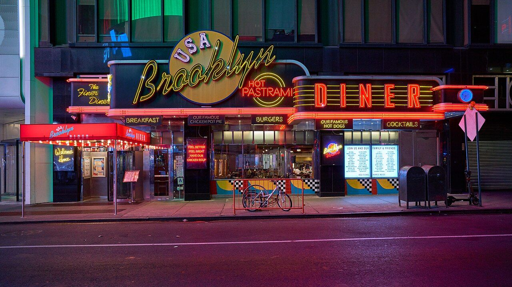

Times Square, New York / Aaron Sebastian, Unsplash
The idea
A city is more than its landmarks.
City, Remembered collects streets, windows, signs, and people. Each photograph holds one place at one moment, then leaves room for you to bring your own memory to it.
Browse by place
Four ways into the city
The archive
Place gives a photograph a memory.
Getty's 12 Sunsets treats a street as something you can revisit. This small archive follows that idea with a simpler tool: choose a city and move through its frames.
Explore the archive

Photo stories
The city leaves traces.
Four short essays, one for each city: a crossing in New York, a road without cars in Tokyo, a long street in Paris, a ferry across the Huangpu.
Read the four stories